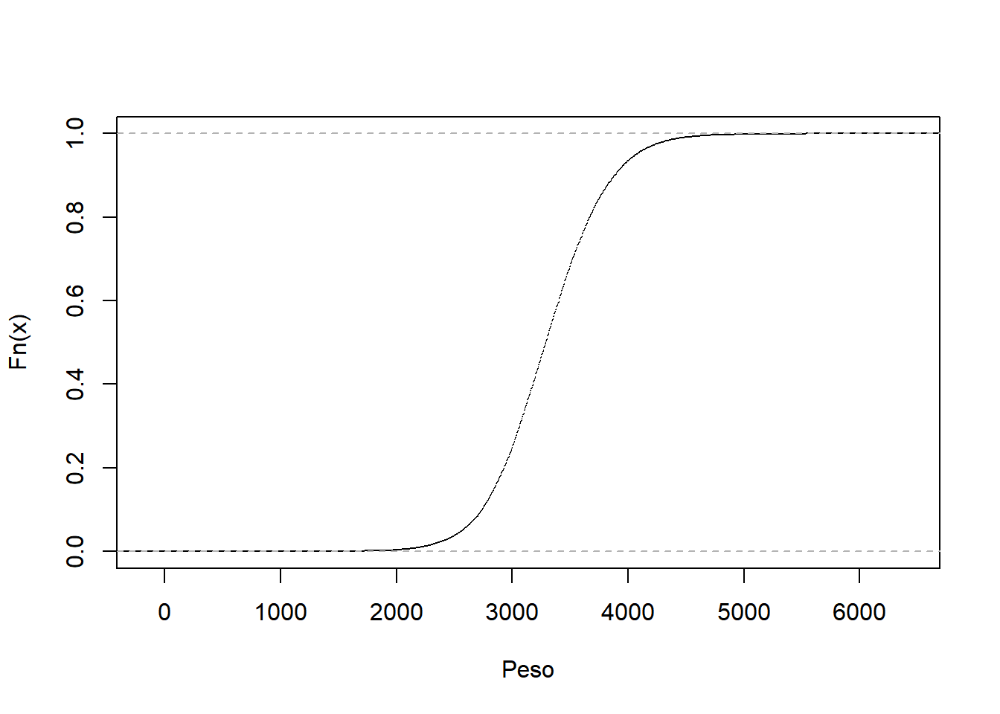
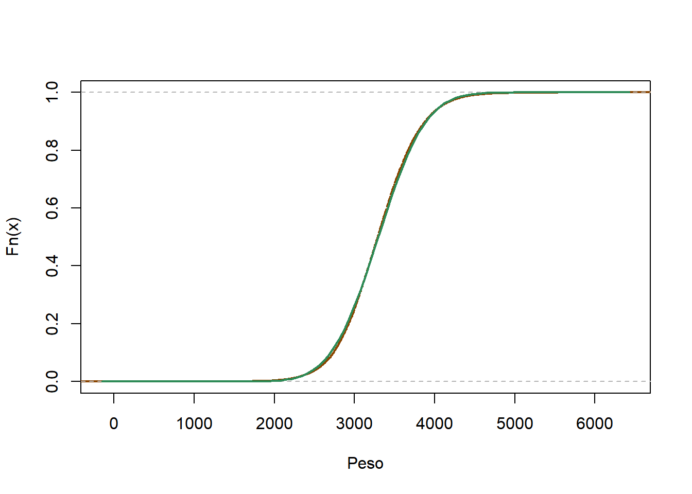
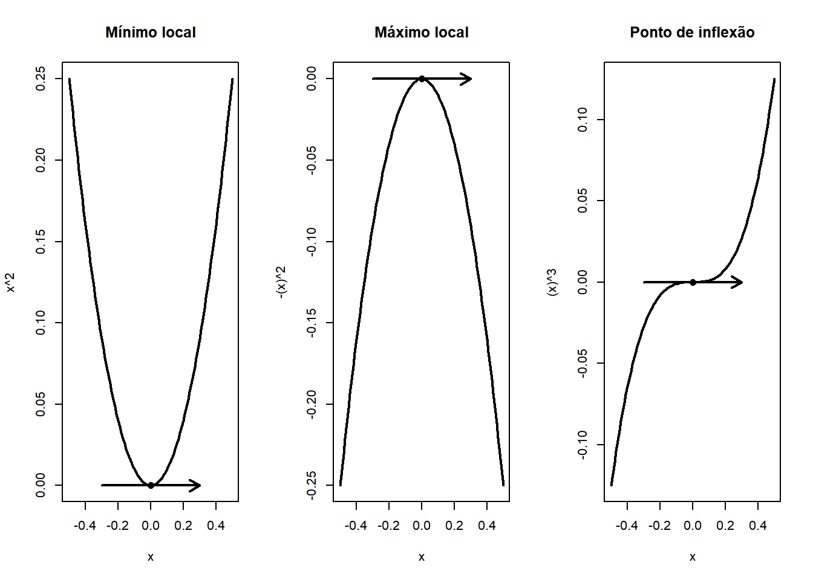
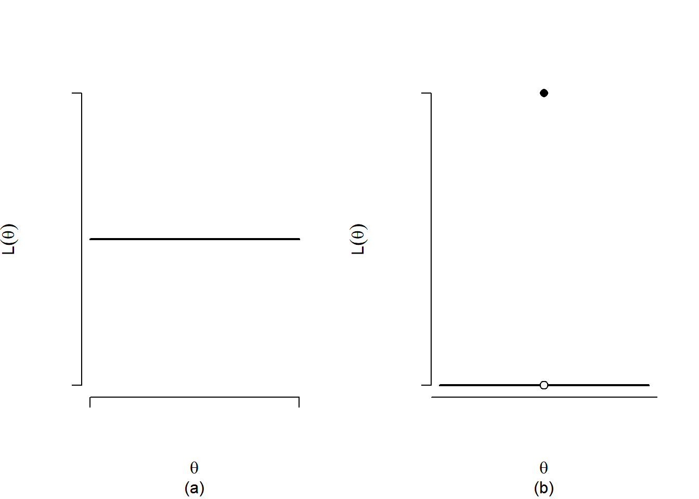
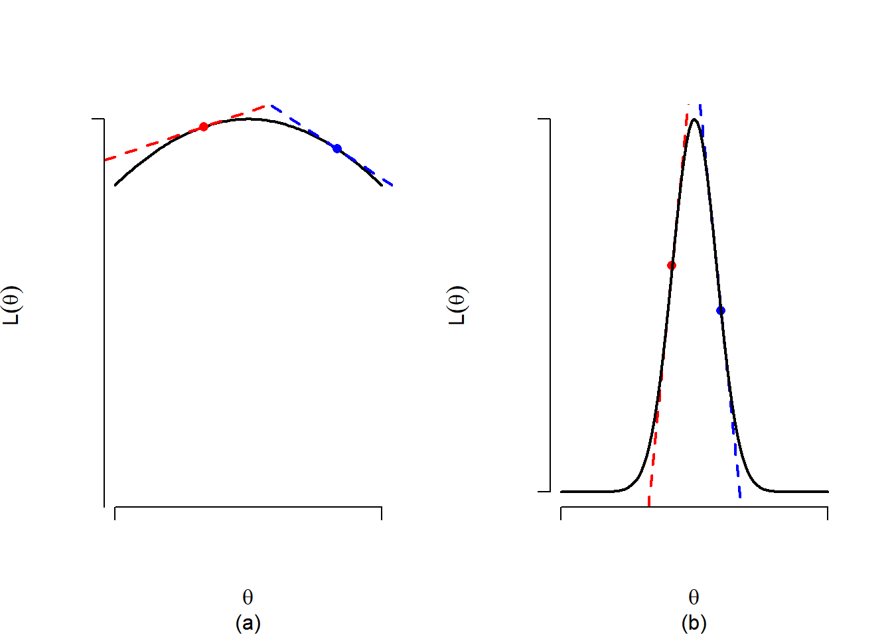
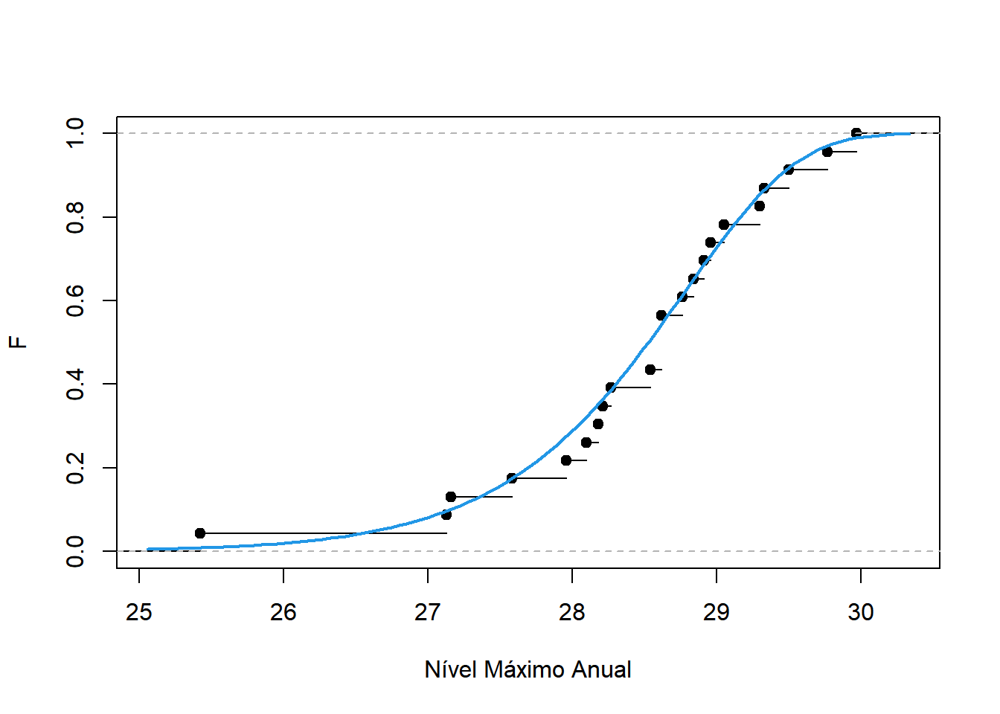

url <- 'https://docs.google.com/spreadsheets/d/1mEpPFyVaU3DjwYvWGhZDS_0EsESLRERSed475P-_29U/edit?usp=sharing'
require(gsheet)Carregando pacotes exigidos: gsheetWarning: package 'gsheet' was built under R version 4.3.2dados <- gsheet2tbl(url)A palavra estimar possui vários significados na língua portuguesa. Em um de seus verbetes, estimar significa apreciação ou avaliação. Neste sentido, a estimação pontual refere-se a um conjunto de técnicas para encontrar uma estatística para avaliar alguma característica da população.
Definição Estimador é uma estatística criada com o objetivo de estimar os parâmetros populacionais. Seu valor observado é denominado estimativa.
Por ser uma estatística, o estimador possui uma distribuição amostral. Considerando seu objetivo primário de estimar \(\theta\), é natural que o estimador produza estimativas próximas deste valor.
Seja \(T\) um estimador para \(\theta\). Definimos o erro quadrático médio por
\[EQM_T(\theta)=E(T-\theta)^2.\] Quanto menor for o erro quadrático médio, maior é a capacidade do estimador produzir, em média, estimativas próximas de \(\theta\). Pode-se notar que
\[\begin{align}EQM_T(\theta)&=E\left(T-E(T)+E(T)-\theta\right)^2\\&=E\left( (T-E(T))^2+(E(T)-\theta)^2- (T-E(T))(E(T)-\theta)\right)\\&=Var(T)+(E(T)-\theta)^2\\&=SE(T)^2+\hbox{Vício}_T(\theta)^2.\end{align}\] onde \[\hbox{Vício}_T(\theta)=E(T)-\theta\] e \[SE(T)=\sqrt{Var(T)}.\]
Vamos analisar as parcelas dessa decomposição em separado. O termo \(E(T)-\theta\) é denominado vício (do estimador). - Se o vício é nulo, o estimador é dito ser não viciado. - Se o vício é positivo, o estimador tende a superestimar \(\theta\). - Se o vício é negativo, o estimador tende a subestimar \(\theta\). O termo \(SE(T)\) é denominado erro padrão (standard error) e é uma medida de acurácia do estimador.
Nota. O erro quadrático médio é utilizado para comparar estimadores. Já o erro padrão é uma importante medida que precisa ser reportada junto com a estimativa pontual.
Exemplo. Seja \(X_1,\ldots,X_n\) uma amostra aleatória de um membro da família de distribuições com variância finita. Sejam \(E(X)=\mu\) e \(\sigma^2=Var(X)\). Considere o estimador \(\bar{X}_n\) para \(\mu\). Como a família não é paramétrica, não sabemos a distribuição amostral de \(\bar{X}_n\). Contudo, tem-se que \[E(\bar{X}_n)=E\left(\frac{1}{n}\sum_{i=1}^n X_i\right)=\frac{1}{n}\sum_{i=1}^nE(X_i)=E(X)=\mu\] logo, o estimador \(\bar{X}_n\) é não viciado para \(\mu\). Além disso, \[Var(\bar{X}_n)=Var\left(\frac{1}{n}\sum_{i=1}^{n}X_i\right)=\frac{1}{n^2}\sum_{i=1}^n Var(X_i)=\frac{\sigma^2}{n}\] logo, o erro quadrático de \(\bar{X}\) é \[EQM_{\bar{X}_n}(\mu)=\frac{\sigma^2}{n}.\] Observe que esse erro quadrático médio é inversamente proporcional ao tamanho da amostra. Portanto, quanto maior o tamanho da amostra, mais próximas de \(\mu\) estarão as estimativas produzidas por \(\bar{X}_n\).
O erro padrão é dado por \[SE(\bar{X}_n)=\frac{\sigma}{\sqrt{n}},\] mas só pode ser reportado se \(\sigma\) for conhecido. É possível mostrar que, sob as mesmas condições, o estimador \[S^2=\frac{1}{n-1}\sum_{i=1}^n (X_i-\bar{X}_n)^2\] é não viciado para \(\sigma^2\).
No exemplo acima, vimos que o erro quadrático médio de \(\bar{X}_n\) tende a zero na medida que aumentamos o tamanho da amostra. Estimadores com essa característica são denominados consistentes.
Uma sequência \(T_n=T_n(X_1,\ldots,X_n)\) de estimadores para \(\theta\) é consistente se, para qualquer \(\varepsilon>0\) e \(\theta\in\Theta\), \[\lim_{n\rightarrow\infty} P(|T_n-\theta|<\varepsilon)=1.\]
Intuitivamente, quanto maior é o tamanho da amostra, maior é a probabilidade do estimador estar arbitrariamente próximo de \(\theta\). O resultado abaixo relaciona a consistência com o erro quadrático médio.
Proposição. Seja \(T_n=T(X_1,\ldots,X_n)\) uma sequência de estimadores. Se, para todo \(\theta\), \[\lim_{n\rightarrow\infty}EQM_{T_n}(\theta)=0,\] então \(T_n\) é consistente.
Exemplo. Considere uma amostra aleatória de uma população com variância finita. Mostramos anteriormente que \[EQM_{\bar{X}_n}(\mu)=\frac{\sigma}{n}.\] Como \[\lim_{n\rightarrow\infty}\frac{\sigma}{n}=0,\] temos que \(\bar{X}_n\) é um estimador consistente.
Discutimos anteriormente que as características de interesse presentes na população são funções dos parâmetros populacionais. Ao se obter uma estimativa para \(\theta\), é natural que essa estimativa seja utilizada para estimar qualquer função de \(\theta\).
Princípio da substituição. Seja \(T\) um estimador para \(\theta\). Então, para qualquer função real \(g(.)\), \(g(T)\) será um estimador para \(g(\theta)\).
Exemplo Considere novamente uma amostra aleatória de um membro da família de distribuições com variância finita. Vimos que \(S^2_n\) é um estimador não viciado para \(Var(X)=\sigma^2\). Então, pelo princípio da substituição, \[S_n=\sqrt{S^2_n}\] é um estimador para \(\sigma\). Também vimos que \(\bar{X}_n\) é um estimador para \(\mu=E(X)\) e que seu erro padrão é \[SE(\bar{X}_n)=\frac{\sigma}{\sqrt{n}}.\] Logo, um estimador para erro padrão de \(\bar{X}_n\) é
\[\widehat{SE}(\bar{X}_n)(\mu)=\frac{S_n}{\sqrt{n}}.\]
Exemplo. Foram coletados o peso em gramas de 100 bebês recém-nascidos no estado do Amazonas em 2010. A estimativa obtida para a média foi \(\bar{x}=3.226,85 g\). O desvio padrão amostral foi 474,556. Logo, o erro padrão estimado para a média foi
\[\hat{SE}(\bar{X}_n)=\frac{474,556g}{\sqrt{100}}=47,4556g.\] Portanto, a estimativa possui um erro de 47,4556\(g\). É usual escrever \(3.226,85g\pm47,4556g\).
Isso implica que há evidências de que nossa estimativa está correta na casa das unidades de milhar, mas pode conter erros nas casas anteriores. A estratégia para diminuir o erro padrão é aumentar o tamanho da amostra.
Seja \(T\) um estimador para \(\theta\) e considere novamente o problema de estimar \(g(\theta)\). O valor da função \(g(.)\) quando \(t\) está na vizinhança de \(\theta\) pode ser aproximado por \[g(t)\approx g(\theta)+(t-\theta)g'(\theta),\] onde \(g'\) é derivada de \(g\). Observe que \[g(t)-g(\theta)\approx (t-\theta)g'(\theta),\] logo \[\underbrace{E\left(g(T_n)-g(\theta)\right)^2}_{EQM_{g(T_n)}(g(\theta))}\approx \underbrace{E\left(T-\theta\right)^2}_{EQM_{T_n}(\theta)} [g'(\theta)]^2\]
Portanto, se \(T_n\) for consistente, então \(g(T_n)\) também será consistente. Pode-se mostrar que
\[\underbrace{E(g(T_n))-g(\theta)}_{\hbox{Vício}_{g(T_n)}(g(\theta))}\approx \underbrace{(E(T_n )-\theta)}_{\hbox{Vício}_{T_n}(\theta)}g'(\theta),\] e, se \(T_n\) é não viciado, teremos que \(g(T_n)\) será aproximadamente não viciado. Além disso,
Importante. A aproximação \[g(t)-g(\theta)\approx (t-\theta)g'(\theta)\] é razoável apenas quando \(t\) está na vizinhança de \(\theta\). Para que os resultados utilizando esperança e variância sejam razoáveis, é necessário que a distribuição amostral de \(T_n\) esteja bem concentrada em torno de \(\theta\), o que é obtido na prática com um tamanho grande de amostra, desde que \(T_n\) seja consistente.
O \(k\)-ésimo momento da população é definido por \(\mu_k=E(X^k)\). Defina o \(k\)-ésimo momento amostral por \[\hat{\mu}_k=\frac{1}{n}\sum_{i=1}^n X_i^k\] Observe que, ao fazer \(X_i^k=Y_i\), teremos que \(\hat{\mu}_k=\bar{Y}_n\). Isso nos permite provar que:
Além disso, para \(n\) suficientemente grande, pelo Teorema Central do Limite \[\hat{\mu}_k\approx \hbox{Normal}\left(\mu_k,\frac{Var(X^k)}{n}\right)\]
Exemplo Seja \(X_1,\ldots,X_n\) uma amostra aleatória da população Poisson(\(\lambda\)). Sabemos que o primeiro momento populacional é \(E(X)=\lambda\). Logo, a média amostral é um estimador não viciado e consistente para \(\lambda\). Além disso, como \[Var(X)=\lambda,\] para \(n\) suficientemente grande,
\[\bar{X}\approx \hbox{Normal}\left(\lambda,\frac{\lambda}{n}\right).\] Note que é possível trabalhar com a distribuição exata de \(\bar{X}_n\), uma vez que \[\sum_{i=1}^n X_i\sim\hbox{Poisson}(n\lambda)\] e \[P(\bar{X}_n=\bar{x}|\lambda)=P\left(\left.\sum_{i=1}^n X_i=n\bar{x}\right|\lambda\right).\]
Considere uma amostra aleatória de uma população com parâmetros \(\theta_1,\ldots,\theta_k\). Suponha que os \(k\) primeiros momentos podem ser escritos como função dos parâmetros, ou seja, existem funções \(g_j(.)\), \(j=1,\ldots,k\) tais que \[\mu_k=g_j(\theta_1,\ldots,\theta_k).\] Suponha ainda que existem funções \(h_j(.)\), \(j=1,\ldots,k\), tais que \[\theta_j=h_j(\mu_1,\ldots,\mu_k).\] O método dos momentos consiste em encontrar os estimadores \(\hat{\theta}_1,\ldots,\hat{\theta}_k\) computando \[\hat{\theta}_j=h_j(\hat{\mu}_1,\ldots,\hat{\mu}_k).\]
Em outras palavras, o método dos momentos consiste em utilizar os momentos amostrais e aplicar o princípio da substituição para obter estimativas dos parâmetros. Como os momentos amostrais são não viciados e consistentes, podemos obter as seguintes propriedades:
Além disso, a distribuição amostral dos estimadores de momentos é aproximadamente normal. Quando há apenas um parâmetro, essa aproximação é dada por
\[\hat{\theta}\approx \hbox{Normal}\left( \theta_j,\frac{Var(X)}{n}\left[\frac{d}{d\mu}h(\mu)\right]^2 \right).\]
Exemplo Seja \(X_1,\ldots,X_n\) uma amostra aleatória da população Exponencial(\(\theta\)). O primeiro momento amostral é \[\mu=E(X)=\frac{1}{\theta}=g(\theta).\] Podemos então escrever \(\theta\) como função do primeiro momento amostral: \[\theta=\frac{1}{\mu}=h(\mu)\] Logo, o estimador obtido via método dos momentos para \(\theta\) é \[\hat{\theta}=\frac{1}{\hat{\mu}}=\frac{1}{\bar{X}_n}.\] Como \[Var(X)=\frac{1}{\theta^2}\] e \[\frac{d}{d\mu}h(\mu)=-\frac{1}{\mu}^2=\left(\frac{1}{\mu}\right)^2=\theta^2,\] teremos que, para \(n\) suficientemente grande, sua distribuição amostral será \[\hat{\theta}\approx N\left(\theta,\frac{Var(X)}{n}h'(\mu)^2\right)=N\left(\theta,\frac{\theta^2}{n}\right)\]
Exemplo Seja \(X_1,\ldots,X_n\) uma amostra aleatória da população Geométrica(\(\theta\)). O primeiro momento amostral é \[\mu=E(X)=\frac{1-\theta}{\theta}=g(\theta).\] Podemos então escrever \(\theta\) como função do primeiro momento amostral: \[\theta=\frac{1}{1+\mu}=h(\mu)\] Logo, o estimador obtido via método dos momentos para \(\theta\) é \[\hat{\theta}=\frac{1}{1+\hat{\mu}}=\frac{1}{1+\bar{X}_n}.\] Como \[Var(X)=\frac{1-\theta}{\theta^2},\] e \[\frac{d}{d\mu}h(\mu)=-\frac{1}{(1+\mu)^2}=\left(\frac{1}{1+\mu}\right)^2=\theta^2,\] teremos que, para \(n\) suficientemente grande, sua distribuição amostral será \[\hat{\theta}\approx N\left(\theta,\frac{Var(X)}{n}h'(\mu)^2\right)=N\left(\theta,\frac{\theta^2(1-\theta)}{n}\right)\]
É possível encontrar a distribuição exata de \(\hat{\theta}\). Para tanto, lembremos que \[\sum_{i=1}^n X_i\sim \hbox{Binomial Negativa}(n,\theta),\] logo, \[\begin{align}P\left(\hat{\theta}=c|\theta\right)&=P\left(\left.\frac{1}{1+\bar{X}_n}=c\right|\theta\right)=P\left(\left.\bar{X}_n=\frac{1}{c}-1\right|\theta\right)\\&= P\left(\left.\sum_{i=1}^n X_i=n\left(\frac{1}{c}-1\right)\right|\theta\right). \end{align}\]
Exemplo. Seja \(X_1,\ldots,X_n\) uma amostra aleatória da distribuição Gama(\(\alpha,\beta\)). A esperança e a variância desse modelo são \[E(X)=\frac{\alpha}{\beta}\] e \[Var(X)=\frac{\alpha}{\beta^2}.\] Como \(E(X^2)=Var(X)+E(X)^2\), podemos deduzir que \[E(X^2)=\frac{\alpha^2+\alpha}{\beta^2}.\] Então, os dois primeiros momentos escritos como função de \(\alpha\) e \(\beta\) são \[\begin{align}\mu_1&=\frac{\alpha}{\beta^2}=g_1(\alpha,\beta),\\ \mu_2&=\frac{\alpha^2+\alpha}{\beta^2}=g_2(\alpha,\beta).\end{align}\] Podemos então escrever \(\alpha\) e \(\beta\) como função de \(\mu_1\) e \(\mu_2\): \[\begin{align}\alpha&=\frac{\mu_1^2}{\mu_2-\mu_1^2}=\frac{\mu_1^2}{Var(X)}=h_1(\mu_1,\mu_2),\\ \beta&=\frac{\mu_1}{\mu_2-\mu_1^2}=\frac{\mu_1}{Var(X)}=h_2(\mu_1,\mu_2).\end{align}\] Portanto os estimadores para \(\alpha\) e \(\beta\) obtidos via método dos momentos são: \[\begin{align}\hat{\alpha}&=\frac{\bar{X}_n^2}{S^2_n}=h_1(\mu_1,\mu_2),\\ \hat{\beta}&=\frac{\bar{X}_n}{S^2_n}=h_2(\mu_1,\mu_2).\end{align}.\]
Exemplo. Seja \(X_1,\ldots,X_n\) uma amostra aleatória da distribuição Beta(\(\alpha,\beta\)). A esperança e a variância desse modelo são \[E(X)=\frac{\alpha}{\alpha+\beta}\] e \[Var(X)=\frac{\alpha\beta}{(\alpha+\beta)^2(\alpha+\beta+1)}.\] Como \(E(X^2)=Var(X)+E(X)^2\), podemos deduzir que \[E(X^2)=\frac{\alpha^2}{(\alpha+\beta)^2}+\frac{\alpha\beta}{(\alpha+\beta)^2(\alpha+\beta+1)}.\] Então, os dois primeiros momentos escritos como função de \(\alpha\) e \(\beta\) são \[\begin{align}\mu_1&=\frac{\alpha}{\alpha+\beta}=g_1(\alpha,\beta),\\ \mu_2&=\frac{\alpha^2}{(\alpha+\beta)^2}+\frac{\alpha\beta}{(\alpha+\beta)^2(\alpha+\beta+1)}=g_2(\alpha,\beta).\end{align}\] Podemos então escrever \(\alpha\) e \(\beta\) como função de \(\mu_1\) e \(\mu_2\): \[\begin{align}\alpha&=\frac{\mu_1^2-\mu_1\mu_2}{\mu_2-\mu_1^2}=\mu_1\left(\frac{\mu_1(1-\mu_1)}{Var(X)}-1\right)=h_1(\mu_1,\mu_2),\\ \beta&=(1-\mu_1)\left(\frac{\mu_1(1-\mu_1)}{Var(X)}-1\right)=h_2(\mu_1,\mu_2).\end{align}\] Portanto os estimadores para \(\alpha\) e \(\beta\) obtidos via método dos momentos são: \[\begin{align}\hat{\alpha}&=\bar{X}_n\left(\frac{\bar{X}_n(1-\bar{X}_n)}{S_n^2}-1\right),\\ \hat{\beta}&=(1-\bar{X}_n)\left(\frac{\bar{X}_n(1-\bar{X}_n)}{S_n^2}-1\right).\end{align}\]
Para o caso de \(q\) parâmetros, é possível mostrar que a distribuição aproximada dos estimadores de momentos é
\[\hat{\theta}_j\approx \hbox{Normal}\left(\theta_j,\frac{1}{n}\sum_{r=1}^k\sum_{s=1}^k\sigma_{r,s}\frac{\partial}{\partial\mu_r}h_j\frac{\partial}{\partial\mu_s}h_j\right),\] onde \[\sigma_{r,s}=Cov(X^r,X^s).\]
Seja \(X_1,\ldots,X_n\) uma amostra aleatória da população, cuja função distribuição, denotada por \(F\), é desconhecida. Nesse caso, \(F\) pertence à classe de todas as funções de distribuição.
Definição. A função de distribuição empírica (FDE) é definida por \[\hat{F}_{n}(x)=\frac{1}{n}\sum_{i=1}^n I(X_i\leq x).\]
Observe que a função de distribuição empírica é uma estatística, cuja distribuição empírica se altera para cada valor de \(x\) fixado. É importante notar que \(x\) é o argumento da função e não está relacionado com a amostra observada. O valor observado dessa estatística, para \(x\) fixado, recebe a mesma notação:
\[\hat{F}_{n}(x)=\frac{1}{n}\sum_{i=1}^n I(x_i\leq x).\] Nos textos básicos de estatística, \(\hat{F}_n(x)\) é comumente denominada função de distribuição acumulada.
Observe que
\[E(\hat{F}_{n}(x))=\frac{1}{n}\sum_{i=1}^n E(I(X_i\leq x))=E(I(X\leq x))=0.P(X>x)+1.P(X\leq 1)=F(x),\] logo, a função de distribuição empírica é um estimador não viciado para a população. Além disso,
\[\begin{align}Var(\hat{F}_{n}(x))&=\frac{1}{n^2}\sum_{i=1}^n Var(I(X_i\leq x))=\frac{1}{n}Var(I(X\leq x))\\&=\frac{1}{n}\left[(0-F(x))^2.P(X>x)+(1-F(x))^2.P(X\leq x)\right]\\&=\frac{1}{n}\left[F(x)^2(1-F(x))+F(x)+F(x)^3-2F(x)^2\right]\\&=\frac{1}{n}\left[F(x)-F(x)^2\right]=\frac{1}{n}F(x)(1-F(x)),\end{align}\] portanto, para qualquer valor de \(x\) fixado, \[\lim_{n\rightarrow\infty }EQM_{\hat{F}_n}(F)=0,\] e \(\hat{F}_n\) é um estimador consistente.
A função de distribuição empírica é equivalente a função de distribuição obtida quando consideramos que cada ponto de uma amostra observada de tamanho \(n\) possui probabilidade \(1/n\).
Exemplo. O banco de dados abaixo possui o peso, em gramas, de 37.439 bebês nascidos no Amazonas em 2010 com mais de 47 semanas de gestação.
url <- 'https://docs.google.com/spreadsheets/d/1mEpPFyVaU3DjwYvWGhZDS_0EsESLRERSed475P-_29U/edit?usp=sharing'
require(gsheet)Carregando pacotes exigidos: gsheetWarning: package 'gsheet' was built under R version 4.3.2dados <- gsheet2tbl(url)O comando ecdf retorna a função de distribuição empírica da amostra. Abaixo, mostramos o gráfico dessa função estimada.
Fn <- ecdf(dados$PESO)
plot( Fn, main = ' ', xlab = 'Peso')
Observe na figura acima o típico formato em S esperado pela função de distribuição da distribuição normal. Assumindo que os dados são provenientes de uma população normal, podemos utilizar o princípio da substituição e estimar sua função por \[\tilde{F}_n(x)=\int_{-\infty}^x \frac{1}{\sqrt{2\pi s_n^2}}e^{-\frac{1}{2s_n^2}(x-\bar{x})^2}.\] Portanto, temos duas estimativas para a função de distribuição. Comparar as duas é a base dos testes de bondade de ajuste. Se as duas diferem, temos evidências de que o modelo paramétrico escolhido não é adequado. A figura abaixo apresenta o gráfico de \(\hat{F}_n\) e \(\tilde{F}_n\), mostrando que há evidências de que os dados são provenientes de uma população normal.
Fn <- ecdf(dados$PESO)
Ftil <- function(x) pnorm(x, mean(dados$PESO), sd(dados$PESO))
plot( Fn, main = ' ', xlab = 'Peso', lwd = 2, col ='darkorange4')
curve(Ftil(x), add=T, col ='seagreen', lwd = 2)
Seja \(X_1,\ldots,X_n\) uma amostra aleatória e seja \(T\) uma estatística. Sabemos que o erro padrão de \(T\) é uma quantidade importante para avaliar a qualidade de \(T\). Entretando, nem sempre é trivial obter uma estimativa para o erro padrão.
Suponha que é possível repetir esse experimento \(B\) vezes e seja \(t_i\) o valor observado da estatística na \(i\)-ésima repetição. Então, o erro padrão poderia ser facilmente estimado por
\[\widehat{SE}(T)=\sqrt{\frac{1}{B-1}\sum_{i=1}^B(t_i-\bar{t})^2},\] onde \(\bar{t}\) é a média amostral de \(t_1,\ldots,t_B\).
Em geral não é possível repetir o experimento várias vezes. Em vez disso, podemos simular novas amostras considerando que a verdadeira distribuição é \(\hat{F}_n(.)\). Cada amostra aleatória simulada é obtida via amostragem aleatória simples com reposição considerando a amostra original. O cálculo do erro padrão utilizando os valores de \(t\) obtidos deste modo é denominado bootstrap
Algoritmo: Metodo bootstrap
Seja \(x_1,\ldots,x_n\) a amostra observada. Para \(i=1,\ldots,B\)
Passo \(i\): colete \(x_1^*,\ldots,x_n^*\) utilizando uma amostragem aleatória simples com reposição de \(x_1,\ldots,x_n\). Calcule \(t_i=T(x_1^*,\ldots,x_n^*)\)
Calcule
\[\widehat{SE}(T)=\sqrt{\frac{1}{B-1}\sum_{i=1}^B(t_i-\bar{t})^2}\]
Exemplo. Considere o seguinte subconjunto da amostra utilizada no exemplo anterior:
amostra <- dados$PESO[1:30]
amostra [1] 3230 3960 3070 3670 3770 3135 3095 3085 3095 3405 3575 2600 3645 3255 3140
[16] 3070 2970 2650 3195 3450 3125 3130 3370 2960 2945 2965 2795 3195 3680 2825Podemos obter uma amostra da função de distribuição empírica sorteando 30 dos números acima ao acaso com reposição
sorteio <- sample(amostra, 30, T)
sorteio [1] 3195 2965 3575 3125 3195 3195 2825 3125 3070 3645 3960 3140 3405 3195 2960
[16] 2960 2600 2795 3095 3195 3450 3135 3095 3140 3195 3680 3125 3130 3140 2795Vamos calcular o erro padrão de \(\bar{X}_{30}\) utilizando do método bootstrap:
t <- NULL
B <- 10000
for( i in 1:B){
sorteio <- sample(amostra, 30, T)
t[i] <- mean(sorteio)
}
# erro padrão
sd(t)[1] 58.63609Compare esse valor com o erro padrão estimado por \(S_n/\sqrt{30}\):
sd(amostra)/sqrt(30)[1] 59.83766Seja \(f(.)\) uma função real. Dizemos que \(x^*\) é um ponto de máximo global se, para todo \(x\) no domínio de \(f\), \[f(x)\leq f(x^*).\]
Exemplo. Seja \[f(x)= -x^2.\] Quando \(x=0\), teremos que \(f(0)=0\). Para qualquer outro valor de \(x\), teremos \(f(x)<0\). Portanto, \[f(x)\leq f(0)\] e \(x^*=0\) é o ponto de máximo.
Exemplo. Seja \[f(x)= I(0\leq x \leq 2).\]
Quando \(x\notin[0,2]\), teremos que \(f(x)=0\). Para qualquer valor de \(x\in[0,2]\), teremos \(f(x)=1\). Portanto, \[f(x)\leq f(x^*)\] onde \(x^*\) é qualquer ponto dentro do intervalo \([0,1]\). Nesse caso, existem infinitos pontos de máximo.
Exemplo. Seja
\[f(x)= xI(0\leq x < 2).\]
Quando \(x\notin[0,2)\), teremos que \(f(x)=0\). Para qualquer valor de \(x\in[0,2)\), teremos \(f(x)=x\).
Sabemos que, quanto mais próximo de 2, maior é o valor de \(x\). Entretanto, como \(f(2)=0\), temos que o máximo não está definido.
Quando \(f(x)\) é contínua, podemos procurar numericamente pelo ponto de máximo utilizando um algoritmo de subida de montanha.
Algoritmo de subida de montanha
Seja \(f(x)\) uma função contínua no domínio \(D\subseteq \mathbb{R}\). Escolha um valor \(m^{(1)}\) como candidato a ponto máximo. Fixe \(\delta>0\) pequeno. Na \(j\)-ésima iteração
Compute \(f(m^{(j)}-\delta)\) e \(f(m^{(j)}+\delta)\).
Se \[f(m^{(j)})< f(m^{(j)}+\delta),\] então \(m^{(j)}\) não pode ser ponto de máximo. Crie um candidato novo \(m^{(j+1)}=m^{(j)}+\delta\).
Se \[f(m^{(j)})< f(m^{(j)}-\delta),\] então \(m^{(j)}\) não pode ser ponto de máximo. Crie um candidato novo \(m^{(j+1)}=m^{(j)}-\delta\).
Repita o algoritmo até encontrar um ponto de máximo.
A figura abaixo apresenta uma função com diferentes regiões que podem interferir na determinação do ponto de máximo global via um algoritmo de subida de montanha. Os pontos em vermelho são diferentes valores iniciais para o algoritmo e os respectivos extremos dos segmentos vermelhos indicam os valores \(m-\delta\) e \(m+\delta\) que serão testados. Observe que:
Ao começar em \(A\), o algoritmo encontra o ponto de máximo global.
Ao começar em \(B\), o algoritmo vai parar em um ponto de máximo local
Ao começar em \(C\), o algoritmo vai parar em algum ponto do platô.

Definição Seja \(f\) uma função definida em \(D\subseteq \mathbb{R}\). Dizemos que \(x^{*}\) é um ponto de máximo local se, para algum \(B\subset D\), \[f(x)\leq f(x^{*}),\;\;\forall\;\;x\in B.\]
Por definição, todo máximo global também é um máximo local. Vamos discutir em quais condições é possível encontrar os pontos de máximo locais. Considere que \(f(x)\) é diferenciável para todo \(x\) e que sua derivada é contínua. Como \(f'(x)\) é o coeficiente angular da reta que passa tangente ao ponto \(x\), temos que \(x^*\) ponto que satisfaz \(f'(x^*)=0\) só pode ser um ponto de máximo (local), mínimo (local) ou ponto de inflexão (essas três possibilidades são denominadas pontos críticos). A figura abaixo ilustra essas três situações.
Para distinguir se o ponto crítico é um ponto de máximo local, devemos verificar a concavidade da função no ponto.
se \(f''(x^*)>0\), então a concavidade de \(f\) no ponto \(x^*\) é voltada para cima (no formato \(\cup\)). Então \(x^*\) é um ponto de mínimo local. Essa função também é denominada convexa.
se \(f''(x^*)<0\), então a concavidade de \(f\) no ponto \(x^*\) é voltada para baixo (no formato \(\cap\)). Então \(x^*\) é um ponto de máximo local
Portanto, desde que a função possua as duas derivadas contínuas, pode-se encontrar todos os pontos críticos e determinar o máximo global da função.
Importante. Em problemas de maximização, tanto analíticos quanto computacionais, é usual procurar pelo ponto de máximo global de \(f(x)\) através da função \(\log f(x)\). Para entender o motivo, observe que
Se \(f(x)\leq f(x^*)\) para todo \(x\), então \(\log f(x)\leq \log f(x^*)\). Portanto, o ponto que maximiza \(f\) também maximiza \(\log f\) (e vice e versa)
Ao aplicar o logaritmo, produtos são transformados em somas e potências em multiplicações. Desse modo, os cálculos das derivadas tendem a serem mais simples.
Exemplo. Seja \[f(x)=\frac{1}{\sqrt{2\pi}}e^{-\frac{x^2}{2}}\] Vamos encontrar o ponto de máximo global dessa função. Primeiro, observe que \[\log f(x)=\log\left(\frac{1}{\sqrt{2\pi}}\right)+\log\left(e^{-\frac{x^2}{2}}\right)=\log\left(\frac{1}{\sqrt{2\pi}}\right)-\frac{x^2}{2}\] A primeira derivada da função acima é \[\frac{d}{dx}\log f(x)=-x\] e o ponto crítico \(x^*\) é encontrado como segue: \[-x^*=0\Rightarrow x^*=0\]
A segunda derivada da função é \[\frac{d^2}{dx^2}\log f(x)=-1\] Como essa derivada sempre é negativa, ela também o será para \(x^*\). Portanto \(x^*\) é um ponto de máximo local. Como esse é o único ponto, ele também é o máximo global.
Exemplo. Seja \[f(x)=x^a(1-x)^b,\] onde \(x\in(0,1)\) e \(a,b>0\). Vamos encontrar o ponto de máximo global dessa função. Primeiro, observe que \[\log f(x)= a\log(x)+b\log(1-x)\] A primeira derivada da função acima é \[\frac{d}{dx}\log f(x)=\frac{a}{x}-\frac{b}{1-x}\] e o ponto crítico \(x^*\) é encontrado como segue: \[\frac{a}{x^*}-\frac{b}{1-x^*}=0\Rightarrow a(1-x^*)-bx^{*}=0\Rightarrow x^*=\frac{a}{a+b}\]
A segunda derivada da função é \[\frac{d^2}{dx^2}\log f(x)=-\frac{a}{x^2}-\frac{b}{(1-x)^2}.\] Como essa derivada sempre é negativa, ela também o será para \(x^*\). Portanto \(x^*\) é um ponto de máximo local. Como esse é o único ponto, ele também é o máximo global.
Para funções com mais de uma variável, diferenciáveis duas vezes, a ideia se mantém. Por exemplo, para duas variáveis, o vetor gradiente contém os coeficientes das retas que geram o plano que passa tangente ao ponto. Portanto, um ponto de máximo terá o vetor gradiente nulo. A figura abaixo ilustra essa situação.
x<- seq(-2,2,.1)
y <- x
z <- outer(x,y,function(a,b)exp(-a^2 - b^2) )
rgl::persp3d( x,y,z,zlim=c(0,1.5))
sqdf <- data.frame(x=c(-3,3,3,-3),
y=c(3,3,-3,-3),
z=c(1,1,1,1) )
rgl::polygon3d(sqdf$x, sqdf$y, sqdf$z, alpha=0.5,
color="purple", add=TRUE)Novamente, os pontos que tornam o vetor gradiente nulo são denominados pontos críticos. Para verificar se eles são pontos de máximo, podemos fazer o teste da concavidade, realizado com a hessiana (matriz construída com as derivadas parciais de segunda ordem):
Se a matriz hessiana aplicada no ponto crítico é positiva semi-definida, \(f\) é uma função é convexa e o ponto é um mínimo local.
Se a matriz hessiana aplicada no ponto crítico é negativa semi-definida, \(f\) é uma função é concava e o ponto é um máximo local.
A condição para que uma matriz hessiana seja negativa semi-definida é ter todos os seus autovalores reais e negativos.
Exemplo. Considere a função \[f(x,y)=e^{-x^2 - y^2},\] onde \((x,y)\in\mathbb{R}^2\). Temos que \[\log f(x,y)=-x^2 - y^2.\] O vetor gradiente de \(\log f\) é
\[\nabla\log f=\left(\begin{array}{c}\frac{\partial}{\partial x}f \\ \frac{\partial}{\partial y}f\end{array}\right)=\left(\begin{array}{c} -2x \\ -2y\end{array}\right)\] Igualando o vetor gradiente a zero, teremos os pontos críticos:
\[\left\{\begin{array}{c} -2x^*=0 \\ -2y^*=0\end{array}\right.\Rightarrow\left\{\begin{array}{c} x^*=0 \\ y^*=0\end{array}\right.\] Agora vamos encontrar a matriz hessiana de \(\log f\):
\[\mathcal{H}=\left(\begin{array}{cc}\frac{\partial^2}{\partial x^2}\log f & \frac{\partial^2}{\partial x\partial y}\log f\\ \frac{\partial^2}{\partial y \partial x}\log f & \frac{\partial^2}{\partial y^2}\log f\end{array}\right)=\left(\begin{array}{cc}-2&0\\0&-2\end{array}\right).\] O autovalores \(\lambda\) são a solução da equação:
\[\begin{align}|\mathcal{H}-\lambda \textbf{I}_2|=0&\Rightarrow \left|\left(\begin{array}{cc} -2&0\\0&-2\end{array}\right)-\left(\begin{array}{cc}\lambda & 0 \\ 0 & \lambda\end{array}\right)\right|=0 \\ &\Rightarrow\left|\begin{array}{cc} -2-\lambda& 0\\0&-2-\lambda\end{array}\right|=0\\ &\Rightarrow (2+\lambda)^2=0\end{align}\] logo, os autovalores são \(\lambda_1=-2\) e \(\lambda_2=-2\). Como ambos são negativos para qualquer \(x,y\), o ponto crítico é ponto de máximo.
Exemplo. Seja \[f(x,y)=x^5y^2e^{-x(1+y^2)}.\] Vamos encontrar o ponto de máximo dessa função. Temos que \(\log f\) é dado por \[\log f(x,y)=5\log x+2\log y-x(1+y^2).\] O vetor gradiente é dado por \[\nabla \log f=\left(\begin{array}{c}\frac{5}{x}-1-y^2 \\ \frac{2}{y}-2xy\end{array}\right).\] Os pontos críticos \((x^*,y^*)\) são \[\left\{\begin{array}{c}\frac{5}{x^*}-1-y^{*2}&=0 \\ \frac{2}{y^*}-2x^*y^*&=0\end{array}\right.\Rightarrow \left\{\begin{array}{c}x^*=4 \\ y^*=\frac{1}{2}\end{array}\right.\] A matriz hessiana é dada por \[\mathcal{H}=\left(\begin{array}{cc}-\frac{5}{x^2} & -2y \\ -2y & -\frac{2}{y^2}-2x\end{array}\right)\] Aplicando o ponto crítico na matriz acima, teremos \[\mathcal{H}=\left(\begin{array}{cc}-\frac{5}{16} & -1 \\ -1 & -16\end{array}\right)\] Resolvendo \[|\mathcal{H}-\lambda\textbf{I}|=0\Rightarrow \left|\begin{array}{cc}-\frac{5}{16}-\lambda & -1\\ -1 & -16-\lambda\end{array}\right|=\left(\frac{5}{16}+\lambda\right)(16+\lambda)-1=0.\] Desenvolvendo a expressão acima, teremos \[\lambda^2 +16,3125\lambda +4=0\] e os autovalores são \(\lambda_1=-0,249\) e \(\lambda_2=-16,063\). Como ambos são negativos, o ponto crítico é um ponto de máximo.
Otimização numérica no R. A função optim é uma poderosa ferramenta de otimização. Por padrão, ela procura minimizar \(f\). Isso não é um problema, pois maximizar \(f\) é equivalente a minimizar \(-f\).
Considere novamente a função \[\log f(x,y)=5\log(x)+2\log(y)-x(1+y^2).\] Vamos implementar a função -\(\log f\):
menoslogf <- function(w) -5 * log(w[1]) -2 * log(w[2]) + w[1] * (1 + w[2]^2)Precisamos de um valor inicial para começar a busca. Vamos começar em \((x,y)=(1,1)\).
opt <- optim( c(1,1), menoslogf)É sempre importante verificar se o algoritmo conseguiu convergir (ou seja, ficou preso em um máximo local). Quando isso acontece, opt$convergence vai assumir o valor 0.
opt$convergence[1] 0O ponto de máximo encontrado foi
opt$par[1] 3.9999204 0.5000218que está bem próximo da solução exata. É possível retornar uma aproximação da matriz hessiana aplicada no ponto de máximo:
opt <- optim( c(1,1), menoslogf, hessian = T)
H <- -opt$hessian
H [,1] [,2]
[1,] -0.3125125 -1.000044
[2,] -1.0000436 -15.999208Note que precisamos colocar o sinal negativo na saída porque desejamos a hessina de \(\log f\). Mais uma vez os valores estão próximos da solução exata.
Embora não seja necessário, podemos mostrar que a hessiana é negativa semi-definida encontrando seus autovalores e mostrando que são todos reais e negativos:
decomposicao <- eigen(H)
decomposicao$values[1] -0.2490157 -16.0627048Observe que nem sempre teremos um ponto crítico, mas isso não implica na inexistência do ponto de máximo global. Entre os casos de interesse nesse curso, estão as funções monótonas em um intervalo.
Definição Dizemos que \(f(x)\) é monótona crescente no intervalo \(D\) se, para quaisquer \(x>y\in D\), \[f(x)<f(y).\] Por outro lado, se para quaisquer \(x>y\in D\) se observar a relação \[f(x)>f(y),\] então \(f(x)\) será dita ser monótona decrescente no intervalo \(D\).
Proposição.
Exemplo. Seja \[f(x)=\log(x)I(0<x\leq 4)\] Observe que \[\frac{d}{dx}f(x)=\frac{1}{x}I(0<x\leq 4).\] Observe que a derivada acima não pode ser nula no intervalo de interesse (\(D=(0,4]\)). Como ela é sempre positiva, a função \(f\) é monótona crescente. Como o maior valor possível em \(D\) é 4, teremo que \(x^*=4\) é o ponto de máximo global.
Cuidado! Considere a função \[f(x)=g(x)I(x\in D).\] Ao derivar, a função indicadora permanece como está: \[\frac{d}{dx}f(x)=\left[\frac{d}{dx}g(x)\right]I(x\in D).\] A explicação é simples: \[f(x)=\left\{\begin{array}{ll}g(x),&\;\;\hbox{se }x\in D,\\0,&\;\;\hbox{ caso contrário}\end{array}\right.\] logo \[\frac{d}{dx}f(x)=\left\{\begin{array}{ll}\frac{d}{dx}g(x),&\;\;\hbox{se }x\in D,\\0,&\;\;\hbox{ caso contrário}\end{array}\right.\Rightarrow g'(x)I(x\in D)\]
Exemplo. Seja \[f(x)=\frac{1}{x}I(x\geq 3)\] A derivada de \(f(x)\) é \[\frac{d}{dx}f(x)=-\frac{1}{x^2}I(x\geq 3).\] Observe que a derivada acima não pode ser nula no intervalo de interesse (\(D=[3,\infty)\)). Como ela é sempre negativa, a função \(f\) é monótona decrescente em \(D\). Como o menor valor possível em \(D\) é 3, teremos que \(x^*=3\) é o ponto de máximo global.
Na língua portuguesa a palavra verossímil é o adjetivo daquilo que é semelhante à verdade, ou plausível. Em inferência, a função de verossimilhança reflete o quão plausível é certo valor do parâmetro considerando a amostra observada.
Definição. Seja \(X_1,\ldots,X_n\) uma amostra aleatória com densidade/função de probabilidade conjunta dada por \[\prod_{i=1}^nf(x_i|\theta).\] A função \(L:\Theta\rightarrow [0,\infty)\) \[L(\theta)=\prod_{i=1}^nf(x_i|\theta)\] é denominada função de verossimilhança.
Para compreender o papel desta função, considere uma moeda cuja a probabilidade de dar cara é \(\theta\) (ou seja, se \(X\) é a indicadora de resultado ``cara’’, \(X\sim\hbox{Bernoulli}(\theta)\)). Inicialmente, considere que existem apenas duas moedas:
Jogamos uma moeda 2 vezes (sem saber qual) e os dois resultados deram coroa (ou seja \(x_1=0,x_2=0\)). Então \[\begin{align*} L(\theta)&=P(X_1=0,X_2=0|\theta)=P(X_1=0|\theta) P(X_2=0|\theta)\\ &=(1-\theta) (1-\theta)\\ &=(1-\theta)^2=\left\{\begin{array}{ll} \left(\frac{9}{10}\right)^2=0,81,& \theta=1/10\\ \left(\frac{1}{2}\right)^2=0,25,& \theta=1/2. \end{array}\right. \end{align*}\] Para \(\theta=1/10\), a probabilidade de ter saído a amostra \((0,0)\) seria 0,01 (99 em cada 100), enquanto que para a outra moeda seria \(0,25\) (uma em cada 4). Estes números mostram que \(\theta=1/10\) é mais verossímil que \(\theta=1/2\). Fazendo, \[\frac{L(1/10)}{L(1/2)}=3,96\] vemos que \(\theta=1/10\) é quase 4 vezes mais verossímil que \(\theta=1/2\). Este é o papel da função de verossimilhança: dizer o quão verossímil é um valor de \(\theta\) para a amostra observada.
A função de verossimilhança representa o quão plausível é determinado parâmetro para a amostra observada. Portanto, é natural escolher como estimador para \(\theta\) o valor \(\hat{\theta}\in\Theta\) com o maior valor para a função de verossimilhança. Este é o princípio do método da máxima verossimilhança.
Definição. Dizemos que \(\hat{\theta}_n\in\Theta\) é um estimador de máxima verossimilhança se, para qualquer outro valor \(\theta\in\Theta\), \[L(\theta)\leq L(\hat{\theta}_n).\]
Exemplo. Seja \(X_1,\ldots,X_n\) uma amostra aleatória da população Poisson\((\theta)\). A função de verossimilhança é \[L(\theta)=\prod_{i=1}^{n}P(X_i=x|\theta)=\prod_{i=1}^{n}\frac{e^{-\theta}\theta^{x_i}}{x_i!}=\frac{e^{-n\theta}\theta^{\sum _{i=1}^{n}x_i}}{\prod_{i=1}^{n}x_i!},\] e a log-verossimilhança é \[\begin{align*} \log L(\theta)&=\log L(\theta)=\log\left(\frac{e^{-n\theta}\theta^{\sum _{i=1}^{n}x_i}}{\prod_{i=1}^{n}x_i!}\right)\\ &= \log\left(e^{-n\theta}\right) +\log\left(\theta^{\sum _{i=1}^{n}x_i}\right) -\log\left(\prod_{i=1}^{n}x_i!\right)\\ &= -n\theta +\sum_{i=1}^{n}x_i\log(\theta) -\log\left(\prod_{i=1}^{n}x_i!\right) \end{align*}\] A primeira derivada de \(\log L(\theta)\) é \[\frac{d}{d\theta}\log L(\theta)=-n+\sum_{i=1}^{n}\frac{x_i}{\theta}\] e o ponto crítico \(\hat{\theta}_n\) é a solução de \[-n+\sum_{i=1}^n \frac{x_i}{\hat{\theta}_n}=0\] que é \(\hat{\theta}_n=\bar{x}_n\). A segunda derivada de \(\log L(\theta)\) é \[\frac{d^2}{d\theta^2}\log L(\theta)=-\frac{1}{\theta^2}\sum_{i=1}^{n}x_i\] e, substituindo \(\hat{\theta}\) na expressão acima, teremos que \[-\frac{1}{\bar{x}_n^2}\sum_{i=1}^n x_i=-\frac{n}{\bar{x}}<0,\] desde que \(\hat{\theta}>0\). Portanto, \[\hat{\theta}_n=\bar{X}_n\] é o estimador de máxima verossimilhança para \(\theta\).
Exemplo. Seja \(X_1,\ldots,X_n\) uma amostra aleatória da população \(\hbox{Uniforme}(0,\theta)\). A função de verossimilhança é \[L(\theta)=\prod_{i=1}^{n}f(x_i|\theta)=\prod_{i=1}^{n}\frac{1}{\theta}I(x_i\leq\theta)=\frac{1}{\theta^n}I(x_{(n)}\leq \theta).\]
Note que
\[\frac{d}{d\theta}L(\theta)=-\frac{n}{\theta^{n-1}}I(x_{(n)}\leq \theta),\] que é negativa para todo \(\theta \geq x_{(n)}\). Como \(L(\theta)\) é uma função monótona decrescente, seu ponto de máximo será o menor valor possível para \(\theta\). Portanto \(\hat{\theta}_n=X_{(n)}\) é o estimador de máxima verossimilhança para \(\theta\).
Exemplo. Seja \(X_1,\ldots,X_n\) uma amostra aleatória da população Exponencial\((\theta)\). A função de verossimilhança é \[L(\theta)=\prod_{i=1}^{n}f(x_i|\theta)=\prod_{i=1}^{n}\theta e^{-\theta x_i}=\theta^n e^{-\theta\sum_{i=1}^n x_i},\] e a log-verossimilhança é \[\begin{align*} \log L(\theta)&=\log L(\theta)=\log\left(\theta^n e^{-\theta\sum_{i=1}^n x_i}\right)\\ &= \log(\theta^n) + \log\left(e^{-\theta\sum_{i=1}^n x_i}\right)\\ &= n\log(\theta) -\theta\sum_{i=1}^{n}x_i \end{align*}\] A primeira derivada de \(\log L(\theta)\) é \[\frac{d}{d\theta}\log L(\theta)=\frac{n}{\theta}-\sum_{i=1}^{n}x_i\] e o ponto crítico \(\hat{\theta}_n\) é a solução de \[\frac{n}{\hat{\theta}_n}-\sum_{i=1}^n x_i=0\Rightarrow \hat{\theta}_n=\frac{1}{\bar{x}_n}.\] A segunda derivada de \(\log L(\theta)\) é \[\frac{d^2}{d\theta^2}\log L(\theta)=-\frac{n}{\theta^2}\] e, substituindo \(\hat{\theta}\) na expressão acima, teremos que \[-n\bar{x}_n^2<0.\] Portanto, \(\hat{\theta}_n=1/\bar{X}_n\) é o estimador de máxima verossimilhança para \(\theta\).
Exemplo. Seja \(X_1,\ldots,X_n\) uma amostra aleatória da população cuja função densidade é dada por
\[f(x|\mu)=e^{-(x-\mu)}I(x\geq \mu),\] onde \(\mu>0\). A função de verossimilhança é \[L(\mu)=\prod_{i=1}^{n}f(x_i|\mu)=\prod_{i=1}^{n}e^{-x_i+\mu}I(x_i\geq\mu)=e^{n\mu-\sum_{i=1}^n x_i}I(x_{(1)}\geq \mu).\]
Note que
\[\frac{d}{d\mu}L(\mu)=\left[\frac{d}{d\mu}e^{n\mu}\right]e^{-\sum_{i=1}^n x_i}I(x_{(1)}\geq \mu)=ne^{n\mu}e^{-\sum_{i=1}^n x_i}I(x_{(1)}\geq \mu),\] que é positiva para todo \(\mu \leq x_{(1)}\). Como \(L(\mu)\) é uma função monótona decrescente, seu ponto de máximo será o maior valor possível para \(\mu\). Portanto \(\hat{\mu}_n=X_{(1)}\) é o estimador de máxima verossimilhança para \(\mu\).
Exemplo. Seja \(X_1,\ldots,X_n\) uma amostra aleatória da população Normal\((\mu,\sigma^2)\). Vamos encontrar os estimadores de máxima verossimilhança. A função de verossimilhança é dada por \[\begin{align*} L(\theta)&=\prod_{i=1}^{n}f(x_i|\theta)=\prod_{i=1}^{n}\left(\frac{1}{2\pi\sigma^2}\right)^{1/2}\exp\left\{-\frac{1}{2\sigma^2}(x_i-\mu)^2\right\}\\ &= \left(\frac{1}{2\pi\sigma^2}\right)^{n/2}\prod_{i=1}^{n}\exp\left\{-\frac{1}{2\sigma^2}(x_i-\mu)^2\right\}\\ &= \left(\frac{1}{2\pi\sigma^2}\right)^{n/2}\exp\left\{-\frac{1}{2\sigma^2}\sum_{i=1}^{n}(x_i-\mu)^2\right\}\\ \end{align*}\] e seu logaritmo é \[\begin{align*} \log L(\theta)&=\log\left(\left(\frac{1}{2\pi\sigma^2}\right)^{n/2}\exp\left\{-\frac{1}{2\sigma^2}\sum_{i=1}^{n}(x_i-\mu)^2\right\}\right)\\ &=\log\left(\left(\frac{1}{2\pi\sigma^2}\right)^{n/2}\right)+\log\left(\exp\left\{-\frac{1}{2\sigma^2}\sum_{i=1}^{n}(x_i-\mu)^2\right\}\right)\\ &=-\frac{n}{2}\log(2\pi\sigma^2)-\frac{1}{2\sigma^2}\sum_{i=1}^{n}(x_i-\mu)^2. \end{align*}\] As derivadas de primeira ordem são \[\begin{align*} \frac{\partial}{\partial\mu}\log L(\theta)&= \frac{1}{2\sigma^2}\sum_{i=1}^{n}(x_i-\mu) \\ \frac{\partial}{\partial\sigma^2}\log L(\theta)&= -\frac{n}{2\sigma^2} +\frac{1}{2\left(\sigma^2\right)^2}\sum_{i=1}^{n}(x_i-\mu)^2 \end{align*}\] e os pontos críticos \((\hat{\mu}_n,\hat{\sigma}^2_n)\) são obtidos resolvendo \[\begin{align*} -\frac{1}{\hat{\sigma}_n^2}\sum_{i=1}^{n}(x_i-\hat{\mu}_{n})&=0 \\ -\frac{n}{2\hat{\sigma}^2_n} +\frac{1}{2\left(\hat{\sigma}^2_n\right)^2}\sum_{i=1}^{n}(x_i-\hat{\mu}_n)^2&=0. \end{align*}\] Após algumas contas, concluímos que os pontos críticos são \[\begin{align*} \hat{\mu}_n&=\bar{x}_n\\ \hat{\sigma}^2_n&=\frac{1}{n}\sum_{i=1}^{n}(x_i-\bar{x}_n)^2. \end{align*}\] Para mostrar que estes são pontos de máximo, considere as derivadas parciais de segunda ordem: \[\begin{align*} \frac{\partial^2}{\partial\mu^2}\log L(\theta)&= -\frac{n}{\sigma^2} \\ \frac{\partial}{\partial\sigma^2}\log(\theta)&= \frac{n}{2(\sigma^2)^2} -\frac{1}{\left(\sigma^2\right)^3}\sum_{i=1}^{n}(x_i-\mu)^2\\ \frac{\partial^2}{\partial\mu\partial\sigma}\log L(\theta)&=\frac{1}{(\sigma^2)^2}\sum_{i=1}^{n}(x_i-\mu)^2 \end{align*}\] formando a matriz Hessiana \[\mathcal{H}=\left(\begin{array}{cc} -\frac{n}{\sigma^2} & \frac{1}{(\sigma^2)^2}\sum_{i=1}^{n}(x_i-\mu) \\\frac{1}{(\sigma^2)^2}\sum_{i=1}^{n}(x_i-\mu) & \frac{n}{2(\sigma^2)^2} -\frac{1}{\left(\sigma^2\right)^3}\sum_{i=1}^{n}(x_i-\mu)^2 \end{array}\right)\] que aplicada no ponto crítico é igual a \[\begin{align*} \mathcal{H}&=\left(\begin{array}{cc} -\frac{n}{\hat{\sigma}^2_n} & \frac{1}{(\hat{\sigma}^2_n)^2}\sum_{i=1}^{n}(x_i-\bar{x}_n) \\\frac{1}{(\hat{\sigma}^2)^2_n}\sum_{i=1}^{n}(x_i-\bar{x}_n) & \frac{n}{2(\hat{\sigma}^2_n)^2} -\frac{1}{\left(\hat{\sigma}^2_n\right)^3}\sum_{i=1}^{n}(x_i-\bar{x}_n)^2 \end{array}\right)\\ &=\left(\begin{array}{cc} -\frac{n}{\hat{\sigma}^2_n} & 0 \\ 0 & \frac{n}{2(\hat{\sigma}^2_n)^2} -\frac{1}{\left(\hat{\sigma}^2_n\right)^3}\sum_{i=1}^{n}(x_i-\bar{x}_n)^2 \end{array}\right)\\ &=\left(\begin{array}{cc} -\frac{n}{\hat{\sigma}^2_n} & 0 \\ 0 & \frac{n}{2(\hat{\sigma}^2_n)^2} -\frac{n}{\left(\hat{\sigma}^2_n\right)^2} \end{array}\right)\\ &=\frac{n}{\hat{\sigma}^2_n}\left(\begin{array}{cc} -1 & 0 \\ 0 & -1/2\hat{\sigma}^2_n \end{array}\right) \end{align*}\]
Os autovalores da hessiana são encontrados resolvendo \[\left(\frac{n}{\hat{\sigma}_n^2}+\lambda\right)\left(\frac{n}{2\hat{\sigma}_n^4}+\lambda\right)=0.\] Os autovalores são \(\lambda_1=-n/\hat{\sigma}^2_n\) e \(\lambda_2=-n/2\hat{\sigma}^4_n\). Por serem reais e negativos, temos que \((\bar{x}_n,\hat{\sigma}^2_n)\) são os estimadores de máxima verossimilhança para \((\mu,\sigma^2)\).
Seja \(x_1,\ldots,x_n\) uma amostra observada de uma população cuja função de verossimilhança é dada por \(L(\theta)\). Considere os seguintes casos extremos:
\(L(\theta)\) é constante para todo \(\theta\in\Theta\): nesse caso, todos os valores de \(\theta\) são igualmente verossímeis.
\(L(\theta)\) é zero, exceto no ponto \(\hat{\theta}_n\), que satisfaz \(L(\theta)<L(\hat{\theta}_n)\). Nesse caso, \(\hat{\theta}\) é o único valor verossímil para $$ \(\theta\in\Theta\).
Os dois casos estão ilustrados abaixo:

Dois casos extremos sobre a função de verossimilhança. Em (a) todos os pontos são verossímeis. Em (b) somente um ponto e verossímil.
Considerando as situações acima, em geral a função de verossmilhança vai se comportar de maneira intermediária. Abaixmo mostramos dois exemplos, nos quais as setas indicam a reta tangente aos pontos marcados. Observe que, quanto mais a função de verossimilhança se concentra ao redor de um único ponto, maior em valor absoluto é o valor da derivada naquele ponto.

Dois casos intermediários. Em (a), há um ponto de máximo, mas seus vizinhos são possuem valores próximos para a função de verossimilhança. Em (b), há um ponto de máximo e a verossimilhança cai para zero rapidamente a medida que nos afastamos dele.
Deste modo, quanto maior for o valor de \(|L'(\theta)|\) na vizinhança de seu ponto de máximo, mais verossímil será a nossa estimativa. Podemos então definir a informação de Fisher.
Definição. Seja \(X_1,\ldots,X_n\) uma amostra aleatória com função de verossimilhança \(L(\theta)\). A informação de Fisher é definida por \[\mathcal{I}_n(\theta)=E\left(\left[\frac{d}{d\theta}\log L(\theta)\right]^2\right)\]
Intuitivamente, quanto maior for a informação de Fisher, mais concentrada, em média, está a função de verossimilhança em torno de seu ponto de máximo.
Proposição. Se \(X_1,\ldots,X_n\) é uma amostra aleatória de uma população pertencente à família exponencial, então
\[\mathcal{I}_n(\theta)=-E\left(\frac{d^2}{d\theta^2}\log L(\theta)\right).\]
Exemplo. Sejam \(X_1,\ldots,X_n\) uma amostra aleatória da população Normal(\(\mu,1\)). A função de verossimilhança é \[L(\mu)=\left(\frac{1}{2\pi}\right)^{n/2}\exp\left\{-\frac{1}{2}\sum_{i=1}^{n}(x_i-\mu)^2\right\}\] e, após algumas contas, concluímos que \[\frac{d^2}{d\mu^2}\log L(\mu)=-n\] logo, a informação de Fisher é \[-E\left(\frac{d^2}{d\mu^2}\log L(\mu)\right)=n,\] portanto, quanto maior for o valor do tamanho da amostra, mais concentrada estará a função de verossimilhança em torno da estimativa de verossimilhança.
Exemplo. Seja \(X_1,\ldots,X_n\) uma amostra aleatória da população Geométrica\((\theta)\), cuja função de probabilidade é dada por \[P(X=x|\theta)=\theta(1-\theta)^{x-1},\] com \(x=1,2,\ldots\) e \(\theta\in(0,1)\). A função de verossimilhança é \[L(\theta)=\prod_{i=1}^{n}P(X_i=x_i|\theta)=\prod_{i=1}^{n}\theta(1-\theta)^{x_i-1}=\theta^n(1-\theta)^{\sum_{i=1}^{n}x_i-n}.\] Disto, teremos que \[\begin{align*} \log L(\theta)&= n\log(\theta) +\left(\sum_{i=1}^{n}x_i-n\right)\log(1-\theta)\\ \frac{d}{d\theta}\log L(\theta)&= \frac{n}{\theta} -\frac{\sum_{i=1}^{n}x_i-n}{1-\theta}\\ \frac{d^2}{d\theta^2}\log L(\theta)&=-\frac{n}{\theta^2}-\frac{\sum_{i=1}^{n}x_i-n}{(1-\theta)^2}. \end{align*}\] Como \(E(X)=1/\theta\), teremos que \[\begin{align*} \mathcal{I}_n(\theta)&=E\left(\frac{n}{\theta^2}+\frac{\sum_{i=1}^{n}X_i-n}{(1-\theta)^2}\right)\\ &=\frac{n}{\theta^2}+\frac{E\left(\sum_{i=1}^{n}X_i-n\right)}{(1-\theta)^2}\\ &=\frac{n}{\theta^2}+\frac{n-\sum_{i=1}^{n}E(X_i)}{(1-\theta)^2}\\ &=\frac{n}{\theta^2}+\frac{n/\theta-n}{(1-\theta)^2}\\ &=\frac{n}{\theta^2}+\frac{1}{\theta}\frac{n-\theta n}{(1-\theta)^2}\\ &=\frac{n}{\theta}\left[\frac{1}{\theta}+\frac{1-\theta}{(1-\theta)^2}\right]\\ &=\frac{n}{\theta}\left[\frac{1}{\theta}+\frac{1}{1-\theta}\right]\\ &=\frac{n}{\theta^2(1-\theta)} \end{align*}\] Portanto, a informação de Fisher o sobre \(\theta\) é uma função linear em \(n\). Isto implica que, quanto maior for o tamanho da amostra, em média, maior será a concentração da verossimilhança em torno da estimativa de máxima verossimilhança.
Nos exemplos acima vimos que o tamanho da amostra \(n\) aumenta a informação sobre \(\theta\). Seja é verdade que, \[\frac{d}{d\theta}E(L(\theta))=E\left(\frac{d}{d\theta}L(\theta)\right),\] a Informação de Fisher é aditiva, ou seja
\[\mathcal{I}_n(\theta)=n\mathcal{I}_{1}(\theta). \] onde \(\mathcal{I}_1(\theta)\) é a informação de Fisher para uma amostra de tamanho 1.
Quando \(\theta\) é um vetor, a informação de Fisher é uma matriz, definida por \[\mathcal{I}_n(\theta)=E\left(\nabla\log L(\theta)\left[\nabla\log L(\theta)\right]^T\right)\] Além disso, se a família pertence a família exponencial, teremos \[\mathcal{I}_n(\theta)=-E\left(\mathcal{H}(\theta)\right),\] onde \(\mathcal{H}\) é a matriz hessiana de \(\log L(\theta)\).
Exemplo. Seja \(X_1,\ldots,X_n\) uma amostra aleatória a população Normal(\(\mu,\sigma^2\)). Vimos anteriormente que \[\mathcal{H}(\mu,\sigma^2)=\left(\begin{array}{cc} -\frac{n}{\sigma^2} & \frac{1}{(\sigma^2)^2}\sum_{i=1}^{n}(x_i-\mu) \\\frac{1}{(\sigma^2)^2}\sum_{i=1}^{n}(x_i-\mu) & \frac{n}{2(\sigma^2)^2} -\frac{1}{\left(\sigma^2\right)^3}\sum_{i=1}^{n}(x_i-\mu)^2 \end{array}\right)\] logo, \[\begin{align*} \mathcal{I}(\mu,\sigma^2)&=-E\left(\begin{array}{cc} -\frac{n}{\sigma^2} & \frac{1}{(\sigma^2)^2}\sum_{i=1}^{n}(X_i-\mu) \\\frac{1}{(\sigma^2)^2}\sum_{i=1}^{n}(X_i-\mu) & \frac{n}{2(\sigma^2)^2} -\frac{1}{\left(\sigma^2\right)^3}\sum_{i=1}^{n}(X_i-\mu)^2 \end{array}\right)\\ &=\left(\begin{array}{cc} \frac{n}{\sigma^2} & -E\left(\frac{1}{(\sigma^2)^2}\sum_{i=1}^{n}(X_i-\mu)\right) \\ -E\left(\frac{1}{(\sigma^2)^2}\sum_{i=1}^{n}(X_i-\mu)\right) & -\frac{n}{2(\sigma^2)^2} +E\left(\frac{1}{\left(\sigma^2\right)^3}\sum_{i=1}^{n}(X_i-\mu)^2\right) \end{array}\right)\\ &=\left(\begin{array}{cc} \frac{n}{\sigma^2} & -\frac{1}{(\sigma^2)^2}\sum_{i=1}^{n}(E(X_i)-\mu) \\ -\frac{1}{(\sigma^2)^2}\sum_{i=1}^{n}(E(X_i)-\mu) & -\frac{n}{2(\sigma^2)^2} +\frac{1}{\left(\sigma^2\right)^3}\sum_{i=1}^{n}E(X_i-\mu)^2 \end{array}\right)\\ &=\left(\begin{array}{cc} \frac{n}{\sigma^2} & 0 \\ 0 & -\frac{n}{2(\sigma^2)^2} +\frac{n}{\left(\sigma^2\right)^2} \end{array}\right)=\frac{n}{\sigma^2}\left(\begin{array}{cc} 1 & 0 \\ 0 & \frac{1}{2\sigma^2} \end{array}\right), \end{align*}\]
Teorema. Sejam \(X_1,X_2\ldots,X_n\) uma amostra aleatória. Seja \(\hat{\theta}_n\) o estimador de máxima verossimilhança para \(\theta\) e seja \(\mathcal{I}_{1}(\theta)\) a informação de Fisher para uma amostra de tamanho 1. Sob certas condições de regularidade, \[\sqrt{n}(\hat{\theta}_n-\theta)\stackrel{D}{\rightarrow}N\left(0,\mathcal{I}(\theta)^{-1}\right),\] quando \(n\rightarrow\infty\).
O teorema acima diz que, para \(n\) suficientemente grande, \[\hat{\theta}_n\approx N\left(\theta,\mathcal{I}_n(\theta)^{-1}\right).\] Isso implica que \(E(\hat{\theta}_n)\approx \theta\), ou seja, o vício do estimador desaparece com o aumento do tamanho da amostra. Além disso, \[Var(\hat{\theta})\approx\mathcal{I}_{n}(\theta)^{-1}=\frac{1}{n}\mathcal{I}_1(\theta)^{-1},\] logo \(\hat{\theta}_n\) é um estimador consistente.
Exemplo Seja \(X_1,\ldots,X_n\) uma amostra aleatória da população Exponencial(\(\theta\)). Temos: \[\begin{align*} L(\theta)&=\theta^ne^{-\theta\sum_{i=1}^{n}x_i}\\ \log L(\theta)&=n\log\theta - \theta \sum_{i=1}^{n}x_i \\ \frac{d}{d\theta}\log L(\theta)&= \frac{n}{\theta} - \sum_{i=1}^{n}x_i \\ \frac{d^2}{d\theta^2}\log L(\theta)&=-\frac{n}{\theta^2}\\ \mathcal{I}_n(\theta)&=\frac{n}{\theta^2} \end{align*}\] Além disso, \[\frac{d}{d\theta}\log L(\theta)=0\Rightarrow \hat{\theta}_n=\frac{1}{\bar{x}}.\] Portanto, teremos que \[\hat{\theta}_n\approx N\left(\theta,\frac{\theta^2}{n}\right).\]
Uma vez que, para grandes amostras, é razoável supor que \(Var(\hat{\theta}_n)\approx \mathcal{I}_n(\theta)^{-1}\), temos que o erro padrão de \(\hat{\theta}_n\) pode ser aproximado por
\[\hbox{SE}(\hat{\theta}_n)\approx \mathcal{I}_n(\theta)^{-1/2}\] e, como esse em geral depende de \(\theta\), pode-se utilizar o princípio da substituição para obter a estimativa
\[\widehat{\hbox{SE}}(\hat{\theta}_n)\approx \mathcal{I}_n(\hat{\theta}_{n})^{-1/2}.\] O curioso é que o estimador acima é o estimador de máxima verossimilhança para \(\hbox{SE}(\hat{\theta}_n)\), conforme podemos ver no seguinte teorema.
Teorema da Invariância. Seja \(\hat{\theta}_n\) um estimador de máxima verossimilhança para \(\theta\). Então, para qualquer função real \(g(.)\), a estatística \(\hat{\phi}_n=g(\hat{\theta}_n)\) será o estimador de máxima verossimilhança para \(\phi=g(\theta)\).
O Teorema da Invariância afirma que qualquer estimador criado a partir do estimador de máxima verossimilhança também será um estimador de máxima verossimilhança.
Exemplo. O banco de dados abaixo contém o tempo (em fração de dias) entre os 126 suicídios registrados em Manaus durante 2022.
require(gsheet)
url <- 'https://docs.google.com/spreadsheets/d/1UUoNR7yDcFjwag3z3C5Ime0oaRCTjTomOaegFnUU-ZU/edit?usp=sharing'
dados <- gsheet2tbl(url)O modelo mais simples para o tempo entre ocorrências é o exponencial. Assumindo que esse modelo é adequado, teremos que a estimativa de máxima verossimilhança será dada por
theta_chapeu <- 1/mean(dados$tempo)
theta_chapeu[1] 0.3789949Para verificar se este modelo é adequado, podemos comparar a função de distribuição empírica com a estimativa de máxima verossimilhança para a função de distribuição do modelo exponencial, dada por
\[\tilde{F}_n(x)=P(X\leq |\theta=\hat{\theta}_n)=1-e^{-x\hat{\theta}_n}.\] Podemos ver no gráfico abaixo que as duas curvas são semelhantes, dando evidências de que os tempos entre os suicídios possuem distribuição Exponencial. A informação de Fisher para esse modelo é \[\mathcal{I}_n(\theta)=\frac{n}{\theta^2},\] logo, o erro padrão estimado para \(\hat{\theta}_n\) é
\[\widehat{SE}(\hat{\theta}_n)=\frac{\hat{\theta}_n}{\sqrt{n}}\]
theta_chapeu/sqrt(126)[1] 0.03376355Assumindo que \(\hat{\theta}_n\) é 0,3, temos que a estimativa de máxima verossimilhança para o tempo entre suicídios é de \[\widehat{E(X)}=\frac{1}{\hat{\theta}_n}=\frac{1}{0,3}=3,3\hbox { dias},\] enquanto a estimativa de máxima verossimilhança para o tempo mediano é o valor \(\hat{\phi}\) que satisfaz
\[1-e^{-\hat{\phi}\hat{\theta}_n}=\frac{1}{2}\Rightarrow \hat{\phi}=\frac{\log(2)}{\hat{\theta}_n}.\]
log(2)/theta_chapeu[1] 1.828909Exemplo Abaixo, temos os níveis máximos anuais do Rio Negro registrados no Porto de Manaus entre 2004 e 2014.
rio <- c(
25.42, 28.76, 29.05, 27.16, 28.54, 28.96, 27.58, 29.30, 28.62, 28.21, 28.91, 28.27, 27.13, 28.10, 28.84, 28.18, 28.62, 29.77, 27.96, 28.62, 29.97, 29.33, 29.50)O Teorema de Fisher-Tippett diz que uma sequência de máximos de variáveis aleatórias independentes e identicamente distribuídas converge em distribuição para um membro da família de distribuições de valores extremos que pode ser dividida nas famílias Gumbel, Fréchet e Weibull. Por isso, é interessante começar nossa análise por uma destas três famílias.
Considere o modelo Weibull, cuja função densidade é dada por
\[f(x|\alpha,\beta)=\frac{\alpha}{\beta}\left(\frac{x}{\beta}\right)^{\alpha-1}e^{-\left(\frac{x}{\beta}\right)^\alpha},\]
O pacote MASS possui a fução fitdistr, que é uma rotina pronta para encontrar a estimativa de máxima verossimilhança para diversos modelos. O código abaixo estima os parâmetros da Weibull.
require(MASS)Carregando pacotes exigidos: MASSajuste <- fitdistr( rio, 'weibull')
ajuste shape scale
38.2253996 28.8904274
( 6.2223528) ( 0.1656916)Temos \(\hat{\alpha}_n=38,2\) e \(\hat{\beta}_n=28,8\). O erro padrão aparece entre parênteses embaixo das estimativas e se refere ao valor obtido através da informação de Fisher.
plot(ecdf(rio),xlab="Nível Máximo Anual",ylab="F",main="")
curve(pweibull(x,38.2,28.8),add=T,col=4,lwd=2) 
Discutimos no começo deste capítulo que o estimador \(T\) é melhor que \(W\), quando o erro quadrático médio do primeiro é uniformemente menor que o do segundo, ou seja \[EQM_T(\theta)<EQM_W(\theta)\] para todo \(\theta\in \Theta\).
Se considerarmos que \(T\) e \(W\) são não viciados, basta comparar as variâncias dos estimadores.
Definição Dizemos que \(T\) é o melhor estimador não viciado de variância uniformemente mínima se, para qualquer outro estimador \(W\) não viciado, \(Var(T)<Var(W)\) para todo \(\theta\).
Se existe o melhor estimador não viciado de variância mínima, então ele é único. O teorema a seguir mostra como determinar se \(T\) é o melhor estimador.
Teorema. \(T\) é o melhor estimador não viciado de variância uniformemente mínima para \(\theta\) se e somente se ele for não correlacionado com qualquer outro estimador não viciado para zero.
Pela sua natureza, o teorema acima caracteriza os melhores estimadores. Entretanto, a sua aplicação não é trivial. O próximo teorema possui aplicação mais imediata.
Teorema de Lehmann-Scheffé. Seja \(T\) uma estatística suficiente e completa. Então, para qualquer função real \(g(.)\), o estimador \(W=g(T)\) é o melhor estimador não viciado de variância uniformemente mínima para \(E(W)\).
Exemplo.
Não podemos garantir que os estimadores de máxima verossimilhança são os melhores estimadores não viciados de variância uniformemente mínima. Contudo, podemos garantir que esse método sempre utilizará estatísticas suficientes e completas quando elas existirem.
Teorema. Seja \(T\) uma estatística suficiente e completa e seja \(\hat{\theta}_n\) o estimador de máxima verossimilhança. Então, \(\hat{\theta}_n\) sempre será função de \(T\) e, nesse caso, ele será o estimador não viciado de variância uniformemente mínima para \(E(\hat{\theta}_n)\).
Exemplo. Seja \(X_1,\ldots,X_n\) uma amostra aleatória da população Exponencial(\(\theta\)). Como \[L(\theta)=\prod_{i=1}^n \theta e^{-x_i\theta}=\underbrace{1}_{h(x)}.\underbrace{\theta^n}_{a(\theta)} \exp\left\{\underbrace{-\theta}_{w(\theta)}\underbrace{\sum_{i=1}^n x_i}_{t(x)}\right\}\] temos que esse modelo pertence à família exponencial e que \(T=\sum_{i=1}^nX_i\) é uma estatística suficiente. Como \(w(\theta)\) possui um intervalo aberto em \(\mathbb{R}\), temos que \(T\) também é completa. Portanto, por Lehman-Scheffé, qualquer estimador construído com \(T\) será o melhor estimador não viciado de variância mínima para seu valor esperado. Isso ocorre com o estimador de máxima verossimilhança, uma vez que
\[\hat{\theta}_n=\frac{1}{\bar{X}_n}=\frac{n}{T}.\] Pode-se provar que \[E(\hat{\theta}_n)=\theta\frac{n}{n-1}\] logo, o estimador de máxima verossimilhança é viciado para \(\theta\) (embora o vício cai rapidamente para zero com o aumento de \(n\)). O estimador \[\frac{n-1}{n}\hat{\theta}_n=\frac{n-1}{\sum_{i=1}^n X_i}=\frac{n-1}{T}\] é não viciado para \(\theta\) e como ele é baseado em \(T\), ele é o melhor estimador não viciado de variância uniformemente mínima para \(\theta\).